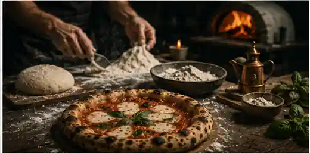
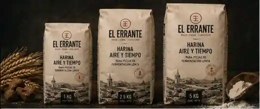
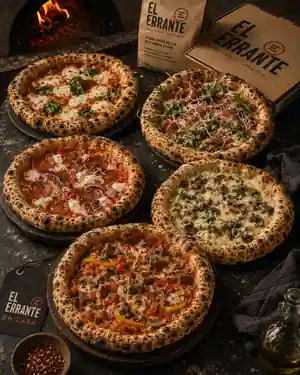

Nuestra historia
Viajar hasta el origen para encontrar una voz propia.
El Errante comenzó con una inconformidad: las pizzas que queríamos hacer no podían depender únicamente de repetir recetas creadas para otras harinas, otros climas, otros equipos y otros contextos.
El punto de partida
La masa que buscábamos todavía no existía para nosotros.
Al principio, el problema parecía estar en la receta. Cambiamos cantidades, tiempos, temperaturas y métodos. Cada ajuste, sin embargo, revelaba una pregunta más profunda: ¿qué debía ser capaz de hacer realmente nuestra harina?
Buscábamos una masa que pudiera incorporar agua sin perder completamente su estructura; tolerar fermentaciones prolongadas; permitir apertura manual; responder con consistencia en distintas jornadas; y conservar carácter después de una cocción intensa.
En lugar de seguir adaptando el resultado a lo que encontrábamos disponible, comenzamos a trabajar en una formulación propia.
La receta dejó de ser una respuesta y se convirtió en un sistema de preguntas.
 Una masa se formula con datos. Se aprueba con las manos.
Una masa se formula con datos. Se aprueba con las manos.
El primer producto
Aire y Tiempo nació antes que la tienda.
Aire y Tiempo surgió como una herramienta interna para ordenar el proceso de masa. Su desarrollo reunió pruebas de hidratación, fuerza, extensibilidad, fermentación, temperatura, frío y cocción.
Con el tiempo entendimos que la harina podía convertirse en una puerta de entrada para quienes querían aprender desde el principio y trabajar con un producto acompañado por métodos, recetas y criterios de lectura.
No la presentamos como una fórmula mágica. La harina no reemplaza la técnica, la temperatura ni la observación. Su propósito es ofrecer una base coherente sobre la cual el método pueda desarrollarse.
Conocer Aire y TiempoUna tradición viva
Respetar el origen no significa inmovilizarlo.
La técnica orienta el camino; el territorio decide cómo continúa.
La pizza napolitana nos interesa porque convierte elementos sencillos en un sistema de enorme precisión. Aprender de esa tradición implica comprender por qué funciona. Copiar únicamente su apariencia sería ignorar las condiciones que la hicieron posible.
Viajar
Acercarnos a los lugares, personas, hornos y productos donde el conocimiento todavía se transmite mediante el oficio.
Comprender
Separar el gesto visible de la razón técnica que lo sostiene.
Volver
Releer lo aprendido desde nuestras materias primas, equipos, condiciones y posibilidades.
Construir
Crear productos y experiencias propios sin fingir una tradición que no nos pertenece.
Masa · Fuego · Territorio
Tres ideas sostienen todo lo que hacemos.
No son una frase decorativa. Son un criterio para decidir qué productos y experiencias pertenecen a la marca.
Masa
La masa concentra decisiones invisibles: formulación, temperatura, mezcla, descanso, división, fermentación, apertura y conservación. Antes de recibir un ingrediente, ya contiene gran parte de la identidad de la pizza.
Fuego
El fuego transforma y también revela. Expone una fermentación deficiente o una apertura desigual; cuando el proceso está bien construido, convierte la masa en textura, aroma y contraste.
Territorio
El territorio es clima, cultura, memoria, ingredientes, productores y formas de compartir. Es lo que permite que una técnica aprendida se convierta en una voz propia.

La pizza de firma
La Errante resume el camino.
El chorizo y la cebolla crean una base intensa y reconocible. Los quesos aportan cuerpo y contraste. El acabado final llega con una reducción balsámica endulzada con panela e infusionada con maracuyá.
El aceto aporta profundidad; la panela, un dulzor tostado; y el maracuyá, una nota aromática y tropical. Se utiliza en pequeñas cantidades para equilibrar la grasa y prolongar el sabor.
No pretende parecer una receta heredada. Es una construcción contemporánea que reconoce lo aprendido y lo utiliza para avanzar.
Conocer La ErranteUna pizzería que viaja
El servicio se convirtió en parte de la historia.
La unidad móvil nació de la necesidad de llevar el proceso completo hasta el lugar del encuentro. No queríamos transportar únicamente un producto terminado: queríamos que el horno, la preparación, el aroma y el ritmo de la cocina formaran parte de la experiencia.
Conocer El Errante en Movimiento
La búsqueda continúa
Una marca que aprende nunca está completamente terminada.
Cada lote, receta, servicio y conversación vuelve a poner a prueba lo que creemos saber. El Errante no se mueve por falta de dirección; se mueve porque entiende que el conocimiento también necesita recorrer un camino.